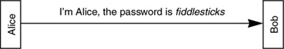

Networking Security Networking Security Networking Security Security Networking Security Networking Security Networking Charlie Kaufman Radia Perlman Mike Speciner Prentice Hall Network Security: Private Communication in a Public World, Second Edition
9.1. Password-Based Authentication
It's not who you know. It's what you know.
Everyone knows what a password is, right? We thought so, too, until we tried to define it. When we use the phrase password-based authentication we are referring to a secret quantity (the password) that you state to prove you know it. The big problem with password-based authentication is eavesdropping.

There are certain types of systems that might be thought of as password-based that we are excluding from our definition. For instance, in some systems a user has a secret word or phrase that the user thinks of as a password, but the string known by the user is converted into a cryptographic key. We consider such a system a cryptographic rather than a password-based authentication system.
Why does anyone use password-based authentication when cryptographic authentication is more secure? When dealing with people unaided by a workstation (e.g. the declining fraction of people at "dumb terminals"), it's difficult to avoid basing protocols on passwords, though as we will see (§10.8 Authentication Tokens), there are some clever devices being manufactured today that make cryptographic solutions compatible with human beings.
Unfortunately, even computer-computer authentication is often based on passwords. Sometimes cryptography is not used because the protocol started out as a human-computer protocol and was not redesigned when its use got expanded to computer-computer communication. Sometimes it isn't used because the protocol designers assumed (perhaps correctly) that cryptography would be overly expensive in implementation time or processing resources. And sometimes cryptography is avoided because of legal issues.
There are some cases in which it is really annoying that the designers opted for a simple password-based scheme. For instance, some older cellular phones transmit the telephone number of the phone and a password when making a call, and if the password corresponds to the telephone number, the phone company lets the call go through and bills that telephone number. The problem is, anyone can eavesdrop on cellular phone transmissions and clone such a phone, meaning they can make a phone that uses the overheard <telephone number, password> pair. Indeed, this is a problemÂcriminals do clone phones for stealing phone service and/or making untraceable calls. It would have been technologically easy to implement a simple cryptographic challenge-response protocol in the phone, and indeed the newer cell phones do this.
There are other issues involved in using passwords. If you are using a workstation, accessing lots of resources across the network, it would be inconvenient for you to have to do a remote login, typing a name and password, every time you accessed a resource such as a file server. For a distributed system to be as convenient to use as a centralized one, you should only need a single password and should only need to enter it once per session. Your workstation could remember your name and password and transmit them on your behalf every time you accessed a remote resource, but this assumes you have the same password on every remote system. How could it be possible to have the same password on many systems? You could individually set your password to the same value on all the systems, but how would you manage to change your password and have the stored password information change simultaneously on all the systems?
9.1.1. Off- vs. On-Line Password Guessing
One way of guessing passwords is simply to type passwords at the system that is going to verify the password. To thwart such an on-line attack, the system can make it impossible to guess too many passwords in this manner. For instance, ATM machines eat your card if you type three incorrect passwords. Alternatively, the system can be designed to be slow, so as not to allow very many guesses per unit time. Also, with an on-line attack, the system can become suspicious that someone might be attempting to break in, based on noticing an unusually large number of incorrect passwords. The system might then dispatch a human to investigate.
In contrast, in an off-line attack, an intruder can capture a quantity X that is derived from a password in a known way. Then the intruder can, in complete privacy, use an arbitrary amount of compute power to guess passwords, convert them in the known way, and see if X is produced. Because a source of good password guesses is a dictionary, an off-line password guessing attack is sometimes referred to as a dictionary attack.
If it is possible for an intruder to do off-line guessing, the secret must be chosen from a much larger space (see §10.3 Off-Line Password Guessing).
9.1.2. Storing User Passwords
How does a server know Alice's password? There are several possibilities.
Alice's authentication information is individually configured into every server Alice will use. One location, which we'll call an authentication storage node, stores Alice's information, and servers retrieve that information when they want to authenticate Alice. One location, which we'll call an authentication facilitator node, stores Alice's information, and a server that wants to authenticate Alice sends the information received from Alice to the authentication facilitator node, which does the authentication and tells the server yes or no.
In cases 2 and 3, it's important for the server to authenticate the authentication storage or facilitator node, since if the server were fooled into thinking a bad guy's node was the authentication storage or facilitator node, the server could be tricked into believing the wrong authentication information, and therefore let bad guys impersonate valid users.
Regardless of where authentication information is stored, it is undesirable to have the database consist of unencrypted passwords because anyone who captured the database could impersonate all the users. Someone could capture the database by breaking into the node with the database, or by stealing a backup tape. In the first case above (authentication information individually configured into every server), capturing a server's database (of unencrypted passwords) would enable someone to impersonate all the users of that server. Also, if a user had the same password on multiple servers, that user could then be impersonated at the other servers as well. In the second and third cases, many servers would use the one location, and capturing its database would enable someone to impersonate the users of all those servers. There's a trade-off, though. It might be difficult to physically protect every server, whereas if all the security information is in one location, it is only necessary to protect that one location.
Put all your eggs in one basket, and then watch that basket very carefully.
ÂAnonymous
An alternative to storing unencrypted passwords is to store hashes of passwords, as is done in UNIX and VMS (see §10.3 Off-Line Password Guessing). Then if anyone were to read the password database they could do off-line password-guessing attacks, but would not be able to obtain passwords of users who chose passwords carefully.
Alternatively, we could have the node that stores the password information encrypt the stored passwords (so that the server could decrypt a given password when needed). With hashed passwords an intruder who can read the hashed password database can do a password-guessing attack because the intruder will likely know the hash function (the function itself would not be secret). But with encrypted passwords the intruder can't get the passwords without knowledge of the node's key. Since the node would be a computer, the node's key would be a high-quality key, not derived from a password a human might be able to remember, and therefore invulnerable to guessing. Seemingly, then, encrypting (rather than hashing) the password database would be more secure, since an intruder would not only have to be able to read the node's database of encrypted passwords, but also acquire the node's key.
Encryption of the password database is indeed fairly secure for storage of the database on backup media, but it really isn't much protection against an intruder compromising the node itself, since the node's key is probably easily obtainable once inside the system. Most likely the node's key would be stored in some easily accessible place, readable by anyone with privileges (intruders always seem to obtain privileges). Worse yet, if the key isn't stored in nonvolatile memory somewhere, it likely would have to be typed in by the system manager every time the node was rebooted, in which case the key would most likely be handwritten and pasted to the keyboard.
It is possible to combine both techniques by encrypting the database of hashed passwords. Then you get the security benefits of both.
Sun Microsystems' NIS (Network Information Service), formerly known as YP (Yellow Pages), uses the directory service as an authentication storage node and stores the user's hashed password there. Like the original UNIX password file, the directory service information is world-readable, which means that anything can claim to be a server needing to see some user's authentication information. As generally deployed, the NIS directory service does not prove its identity to the server requesting the user's authentication information, so impersonation of the directory service is somewhat of a security hole. NIS does make authentication across a network more convenient, but we suspect its availability will not convince NSA that it is safe to hook all its computers to the Internet.
 |